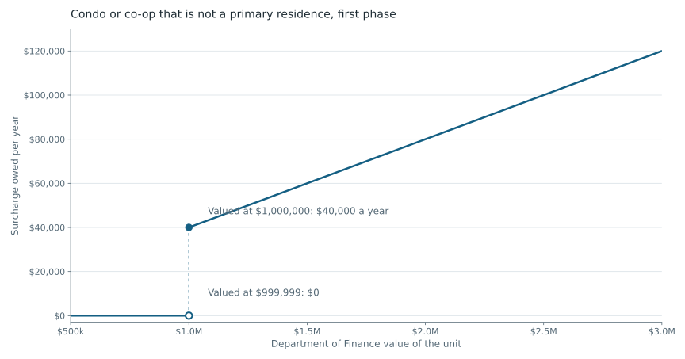

On 4 November a state appeals court threw out the lawsuit that had held up New York City's surcharge on homes that are nobody's primary residence. The four judges of the Appellate Division, Second Department, ruled unanimously that the seven homeowners who sued had not shown that the city's notices harmed them. They did not rule on the tax itself, and other challenges, including one in Suffolk County, are still pending. A real estate lawyer told Commercial Observer that owners should expect bills within weeks. The first payment is due on 1 January 2027.
Mayor Mamdani proposed the surcharge, and it passed as part of the state budget Governor Hochul signed in May. The city mailed about 17,000 notices to owners whose records did not show a primary residence, and Gothamist reports that more than 8,800 exemptions have been granted since. The comptroller estimated earlier this year that the surcharge could raise up to $380 million a year from about 11,200 properties; the mayor puts the figure at $500 million.
Until June 2028 it runs on two schedules. A condo or co-op unit pays 4% a year once the Department of Finance values it at $1 million, 5.25% above $3 million and 6.5% above $5 million. A one- to three-family house pays 0.8% from $5 million, 1.05% above $15 million and 1.3% above $25 million.
The worked examples that law firms have published so far apply the rate to the whole value. On that reading a condo valued at $999,999 owes nothing and one valued at $1,000,000 owes $40,000 a year. If the higher bands work the same way, a unit valued just over $3 million owes $37,500 a year more than one valued just under it. A house valued at $5 million also owes $40,000.



Read the chart data as a table
| Department of Finance value | Surcharge a year |
|---|---|
| $999,999 | $0 |
| $1,000,000 | $40,000 |
| $2,000,000 | $80,000 |
| $2,999,999 | $120,000 |
A familiar design
Economists call a tax like this a notch, and New York already has several. The 1% mansion tax and the supplemental rates added in 2019 apply to the whole purchase price once it reaches $1 million, $2 million, $3 million and higher lines. My research on those lines found that when one more dollar costs thousands in tax, buyers and sellers settle just below the line. Before 2019, sales at exactly $2 million were 7.8 times as common as prices around them. Afterward the ratio was 2.3, and sales at $1,999,999 went from four between January 2016 and March 2019 to 127 between 2020 and 2025. That story is here.
With the surcharge, though, the owner does not pick the number. In the first phase the city uses its existing valuations, which for condos and co-ops have long sat well below sale prices. Nobody can write $999,999 on a contract to stay out. An owner can still challenge the valuation, and the reward is largest just above a line: a unit valued at $1.05 million that gets its value cut below $1 million saves $42,000 a year. I expect valuation appeals to bunch in that range, and the city's appeal records will show whether they do.
When sale prices become the tax base
For the records I study, the second phase matters more. From July 2028 every covered home faces a single $5 million line, and the Department of Finance is to value homes with a model built on comparable sales. Recorded sale prices will then feed the tax base. Some of those prices are not what a buyer paid a stranger. In my work on foreclosure deeds I found 16,655 deeds among 1.47 million deed records in four boroughs whose recorded amount follows a legal rule, such as a lender's bid at auction. In a random sample of repeat house sales where buyer and seller share a surname, 16 of the 40 transfer forms showed a sale between relatives or another sign that it was not a market sale; those forms were read with AI assistance and I checked each reading. These deeds sit in the same sales file a valuation model would draw on, and the model will have to screen them out just as a price index does. The surcharge is set to expire in June 2031, so the second phase would run for three years.
Sources and methods
Court ruling, notices, exemptions and revenue estimates: Fortune, 4 November 2026. Expected billing: Commercial Observer, November 2026. Rate schedule, phases, due date and expiry: Dechert and Day Pitney. Whole-value example: Greenberg Traurig, August 2026. The chart applies 4% to the whole value in the first condo and co-op band; it is an illustration, not a bill, and ignores the exemptions.
Round-price figures: The Shape of the Tax, v3.7, Table 1. Legal-rule deeds: When a Deed Is Not a Market Sale, v1.0.14. Same-surname sample: Who Gets the House?, v3.12. The appeals prediction is mine and is not tested in any of the papers.
New article text and original graphics: CC BY 4.0. Credit Pablo Loschi, NYC Housing Data; retain the source and sample, and identify edits. Underlying research releases retain their own terms.